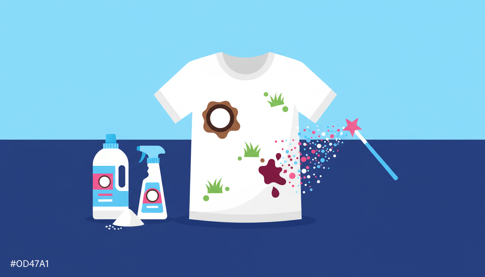

Stains happen. No matter how careful you are, eventually something ends up where it shouldn't — a splash of coffee on your shirt, a streak of grass on your kid's shorts, or a drop of red wine on your favourite top. The good news is that most common stains can be dealt with at home before you even put the item in the wash. The key is knowing what works for each type of stain and acting quickly.
The Golden Rules of Stain Removal
Before we get into specific stains, there are a few universal principles that apply to almost every situation:
1. Act fast. The sooner you treat a stain, the easier it is to remove. A fresh stain is always simpler to deal with than one that's had time to set and bond with the fabric fibres.
2. Blot, don't rub. Rubbing pushes the stain deeper into the fabric and spreads it outward. Instead, gently blot from the outside of the stain toward the centre using a clean cloth or paper towel.
3. Start with cold water. Unless you know the stain specifically requires warm or hot water, cold is your safest starting point. Hot water can permanently set many types of stains — especially protein-based ones like blood or egg.
Stain-by-Stain Guide
Coffee and Tea
Rinse the stain under cold running water as soon as possible to flush out as much of the liquid as you can. Apply a small amount of liquid detergent directly to the stain and gently work it in with your fingers. Let it sit for five minutes, then rinse again. For older or dried-on coffee stains, soak the garment in a mixture of warm water and detergent for 30 minutes before washing. Wash on a warm cycle — coffee and tea are tannin-based stains, so warm water with detergent is more effective than cold alone.
Red Wine
The classic nightmare stain. Speed is everything here. Blot up as much wine as possible immediately — don't rub. Sprinkle a generous layer of salt or bicarb soda over the stain to absorb the remaining liquid. Once the salt has drawn out the colour (give it a few minutes), brush it off and rinse the area under cold water. Apply liquid detergent to the stain and wash on a warm cycle. If the stain persists, soak in a mix of warm water and oxygen-based bleach (the colour-safe kind, not chlorine) for an hour before rewashing.
Grass
Grass stains are a combination of proteins and green pigments (chlorophyll), which makes them stubborn. Pre-treat by rubbing a small amount of liquid detergent or a paste of bicarb soda and water directly onto the stain. Let it sit for 15 to 20 minutes. For tougher stains, soaking in white vinegar for 30 minutes before washing can help break down the chlorophyll. Wash in warm water. Avoid hot water, which can set the protein component.
Grease and Oil
Cooking oil, butter, salad dressing, and similar grease stains respond well to dish soap — the kind you use for hand-washing dishes. Apply a few drops directly to the stain and gently work it in. Dish soap is specifically designed to cut through grease, which is why it works better here than regular laundry detergent alone. Let it sit for 10 minutes, then wash on the warmest temperature the fabric can handle. Grease stains need heat to dissolve, so cold water won't be very effective.
Blood
The single most important thing with blood stains is to use cold water only. Hot water cooks the proteins in blood and sets the stain permanently. Rinse the stain under cold running water immediately — you'll see a lot of the blood flush out straight away. For dried blood, soak the garment in cold water with a tablespoon of salt for several hours (overnight is fine). Apply liquid detergent to the stain before washing on a cold cycle. Hydrogen peroxide (the kind from the chemist) can also be dabbed onto stubborn blood stains on white fabrics, but test on an inconspicuous area first as it can lighten colours.
Ink
Ballpoint pen ink responds well to rubbing alcohol or hand sanitiser. Place the stained area face-down on a clean paper towel, then dab the back of the stain with rubbing alcohol using a cotton ball. The ink will transfer onto the paper towel beneath — replace the towel as it absorbs the ink. Once most of the ink is drawn out, rinse in cold water and apply liquid detergent before washing normally. For permanent marker, the process is similar but may need several rounds of treatment.
Mud
Resist the urge to wash mud immediately. Let the mud dry completely first — this sounds counterintuitive, but wet mud smears and pushes deeper into the fabric. Once dry, brush off as much as possible with a stiff brush or the back of a spoon. Then rinse under cold water, apply detergent to any remaining marks, and wash on a warm cycle. Mud is mostly just dirt, so it's actually one of the easier stains to remove once you let it dry first.
Tomato Sauce
Scrape off any excess sauce with a spoon — don't wipe it, as that pushes it into the fibres. Rinse the back of the stain under cold running water (running water through the back pushes the stain out rather than deeper in). Apply liquid detergent directly and let it sit for 10 minutes. Wash on a warm cycle. If a faint orange shadow remains after washing, hang the garment in direct sunlight — UV light naturally bleaches tomato stains. Don't put it in the dryer until the stain is completely gone, as heat from the dryer will set it permanently.
Sweat and Deodorant Marks
Those yellow underarm stains are caused by a chemical reaction between sweat and the aluminium in antiperspirant. A paste of bicarb soda and water applied to the stain and left for 30 minutes before washing is one of the most effective treatments. For stubborn build-up, soak the garment in a mixture of warm water and oxygen-based bleach for an hour before washing. White vinegar can also help — pour it directly onto the stain, let it sit for 15 minutes, then wash as normal. Prevention tip: let your deodorant dry completely before putting on your shirt.
When Hot Water Helps (and When It Hurts)
Knowing the right water temperature is half the battle with stain removal. As a general rule: use cold water for protein-based stains (blood, milk, egg, sweat) and warm to hot water for oil-based and tannin-based stains (grease, coffee, wine). If you're not sure what type of stain you're dealing with, start with cold — it won't set anything, and you can always step up to warm on a second wash if needed.
When a Commercial Machine Makes the Difference
Home washing machines do a decent job, but commercial machines have a real advantage when you're dealing with tough or set-in stains. The higher water pressure, stronger agitation, and better water extraction of a commercial washer can shift stains that a home machine struggles with — especially on bulky items like stained tablecloths, sports uniforms, and bedding.
At Laundry Day, our commercial machines at Brunswick East, St Albans, and Maribyrnong give you full control over water temperature so you can match the cycle to the stain. Detergent is included with every wash, and there are no card fees. If you've been fighting a losing battle with a stubborn stain at home, a single cycle in a commercial machine might be all it takes.
Stains don't have to be permanent. With the right technique and a bit of speed, you can save almost anything. Bookmark this page for next time disaster strikes — because it will.
Tough Stain? Bring It In
Our commercial machines tackle stains that home washers can't. Free detergent, full temperature control, zero card fees.
Find Your Nearest Location